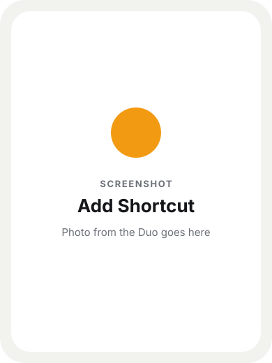
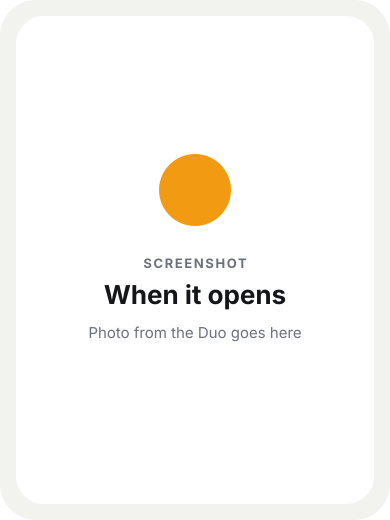
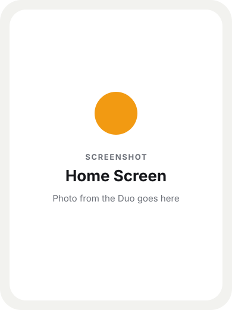
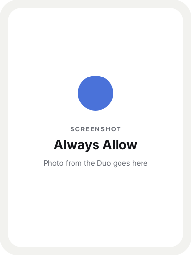
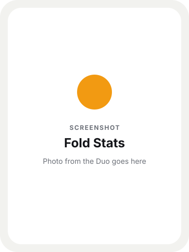

1
Add them on your iPhone
Open this page on the Duo. Tap each shortcut, then tap Add Shortcut. The automation is not in the file. You add that next, on the shortcut itself.

Free for iPhone Duo
Fold the phone, unfold it, and Shortcuts writes it down. One tap later you can see how long it stayed open today, this week, this month, and this year. No app and no account. The list stays in your iCloud Drive.
Free. An iPhone Duo on iOS 27.1 or later.
Two of them run when you fold the phone. The third is the page you open when you want the numbers. The pictures are stand-ins until the real ones are in.
Open this page on the Duo. Tap each shortcut, then tap Add Shortcut. The automation is not in the file. You add that next, on the shortcut itself.

Open Fold Opened and add an automation for when the iPhone is opened. Let it run right away, without asking. Turn off Show on Apple Watch, and turn off Show in Search. You do not run this one yourself.

Do the same on Fold Closed, for when the iPhone is closed. Off the Apple Watch, and out of search.
Leave Show in Search on. Leave Show on Apple Watch off. Add Fold Stats to the Home Screen, so the page is one tap away.

Run Fold Opened once, and run Fold Closed once. When the phone asks about files, tap Always Allow. If that question waits until an automation runs, the automation can stop without telling you. Those two runs add about a second to the log.

Fold and unfold a few times. Open Fold Stats from the Home Screen. You get one page: open or closed right now and for how long, a bar for today, and a card each for today, this week, this month, and this year.
The file is duo-folds.csv in the Files app, under iCloud Drive, then Shortcuts. The first fold creates it. Nothing in that file is sent anywhere.

The page, the shortcuts, and these steps are free. If it saved you some time, you can leave a tip.
Also from here
Approach Traffic Control is an air traffic control game for iPhone and iPad. Planes show up at the edge of your scope and you bring them down onto the runway. San Diego is free to play, with no ads and no account.